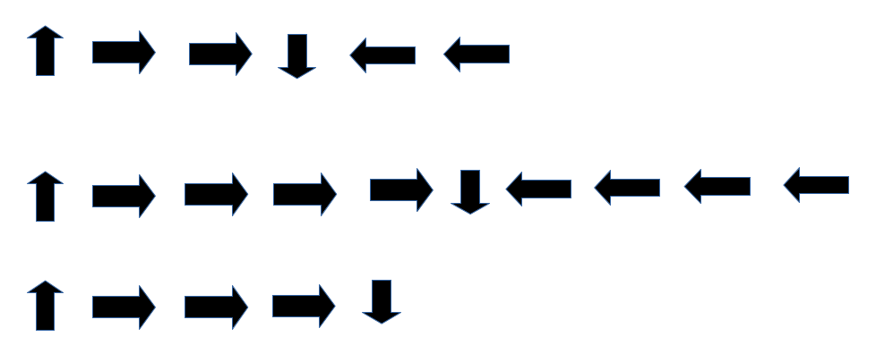

Una pila de vasos
Introducción
En esta actividad, los estudiantes tendrán que apilar de una determinada manera unos vasos de
plástico o cartón a partir de unas instrucciones dadas de manera específica. Esta actividad sirve
para introducir de manera intuitiva conceptos de programación como las secuencias, funciones o
depuración.
Los objetivos con los que se plantea la actividad son los siguientes:
• Aprender a secuenciar instrucciones.
• Definir y aplicar un algoritmo.
• Utilizar símbolos para representar las instrucciones.
• Corregir posibles errores a la hora de evaluar un proceso.
Metodología
Para llevar a cabo la actividad es necesario definir dos roles entre el alumnado participante.
Por un lado está el programador, quien se encargará de crear la secuencia de movimientos necesaria
para apilar los vasos de una determinada forma.
El otro es el del robot, quien se encargará de ejecutar la secuencia creada por el programador. Si hay más de una persona con el mismo perfil, se pueden complementar en el trabajo. Por ejemplo, si hay dos robots, ambos pueden ejecutar la secuencia de manera independiente y luego hacer una comparativa.
Si hay dos programadores, pueden definir la secuencia por separado y que un mismo robot las ejecute para comparar los resultados.
Los estudiantes pueden formar grupos de trabajo de 2 ó 3 personas. La actividad está diseñada para desarrollarse en una sesión de 1 hora, aunque esto puede variar en función de las características del grupo con el que se trabaja. Igualmente, puede adaptarse a distintas situaciones trabajando las órdenes en un segundo idioma.
Materiales
Para realizar la actividad, cada grupo necesita los siguientes materiales:
• Página de movimientos.
• 17 vasos de plástico o cartón.
• Papel y lápiz
Vocabulario
Con el desarrollo de esta actividad es adecuado que el alumnado se familiarice con el siguiente vocabulario:
• Algoritmo. Una serie de pasos ordenados que ayudan a realizar una tarea.
• Código. Lenguaje simbólico que permite interpretar una serie de instrucciones.
• Depurar. Buscar y corregir errores a lo largo de la ejecución de la tarea.
• Función. Una parte del código que puede utilizarse muchas veces.
• Parámetros. Información que puede utilizarse en una función para ejecutarla.
Desarrollo
Introducción
Comienza preguntando a la clase si alguien ha oído hablar de la robótica. ¿Alguien ha visto un robot o ha utilizado uno? ¿Realmente un robot "oye" lo que hablas? ¿Realmente "entiende" lo
que dices?
La respuesta a la última pregunta es: "No de la misma manera que una persona". Los robots funcionan a partir de "instrucciones", conjuntos específicos de tareas para las que han sido
programados. Para llevar a cabo una tarea, un robot necesita tener un conjunto de instrucciones (también llamado algoritmo) que pueda ejecutar. .
Comienzo
Saca una copia de la página de movimientos (o escribe los símbolos en la pizarra). Hazte a un lado y dile a la clase que estos serán los únicos seis símbolos que utilizarán para este ejercicio.
Para esta tarea, darán instrucciones a su "robot" para que construya una pila de vasos específica utilizando únicamente estas flechas:
Pasos
1. Elegir un "Robot" por equipo.
2. Enviar el robot a la "Biblioteca de Robots" mientras los "programadores" codifican.
3. Escoge una imagen de las posibles pilas de vasos que se pueden formar para cada grupo.
4. Los grupos crearán un algoritmo de cómo el robot debe construir la pila seleccionada.
5. Los codificadores traducirán el algoritmo a los movimientos con flechas.
6. Cuando los programadores hayan terminado de codificar, podrán llamar a su robot.
7. El robot leerá los símbolos de las tarjetas y los traduce de nuevo en movimientos.
8. El grupo debe observar si hay movimientos incorrectos, y luego trabajar juntos para corregir y mejorar su programa antes de pedirle al robot que vuelva a ejecutarlo.
Reglas
1. Los programadores deben traducir todas las jugadas utilizando sólo las seis flechas del juego.
2. Los vasos deben permanecer con el robot, no se proporcionan a los programadores durante la codificación.
3. Una vez que los robots estén de vuelta con sus grupos, no se puede hablar en voz alta.
Ejemplo
Puede ser útil repasar un ejemplo en clase. Una posible pila incluye sólo tres vasos, que es el primer ejemplo.
Coloca la pila de vasos en la mesa donde todos puedan verlos. Pide a la clase que te indique lo primero que debes hacer. La respuesta correcta es "coger el vaso". Cuando levantes cada vaso,
observa que el vaso debe elevarse automáticamente por encima del vaso más alto de la pila. Con la mano aún en el aire, pide el siguiente movimiento.
Es importante recordar a la clase varias veces que un paso adelante es sólo la mitad del ancho de una taza.
Una vez que se haya colocado la primera taza, vuelve a la pizarra y reta a la clase a que te ayude a escribir los símbolos en la pizarra para poder "ejecutar el programa". Una posible solución es la
siguiente:

A la hora de escribir el programa, las instrucciones pueden quedar de la siguiente manera:
- Coger vaso, paso adelante, paso adelante, soltar vaso, paso atrás, paso atrás.
- Coger vaso, paso adelante, paso adelante, paso adelante, paso adelante, soltar vaso, paso atrás, paso atrás, paso atrás, paso atrás.
- Coger vaso, paso adelante, paso adelante, paso adelante, soltar vaso
La actividad
Agrupamiento. Agrupar a los estudiantes de forma que haya suficientes programadores en cada grupo para que éste nunca se pierda del todo.
Robot. Elige un "robot" de cada grupo para que vaya a esperar a la "biblioteca de robots". Éste debe ser un lugar lo suficientemente alejado de los grupos como para que ningún robot pueda
averiguar con qué tarjeta de movimientos están trabajando sus programadores. Los robots pueden aprovechar su tiempo en la biblioteca para practicar el apilamiento de vasos y pedir
aclaraciones sobre las reglas.
Programadores. Cada grupo de programadores debe recibir una tarjeta de pila de vasos en cada ronda. A continuación, pueden empezar a crear el algoritmo de su pila. ¿Cuántas tazas necesitarán? ¿Cuántos pasos para el primer vaso? ¿Para el segundo? ¿Hay algún vaso al revés? Una vez contestadas estas preguntas, los programadores pueden utilizar los símbolos para escribir
su código en un papel en blanco. Los programadores deben revisar su código para ver si tiene sentido para la pila antes de sacar su robot de la biblioteca de robots.
Ejecutar el código. Ahora que el robot está de nuevo con el grupo, todos deben guardar silencio. Los grupos no deben intentar utilizar palabras o gestos para influir en el comportamiento de su
robot. El robot sólo debe funcionar de acuerdo con lo que le indiquen las flechas. Si el grupo encuentra un error, puede detener el programa, volver a enviar al robot a la biblioteca y corregir
el error antes de volver a traer el robot para completar el desafío.
Repetir. Cada vez que un grupo resuelve un desafío, puede elegir un nuevo robot y recibir una nueva tarjeta de pila de vasos (preferiblemente más difícil). Esto puede continuar hasta que se
acabe la clase, hasta que todos los miembros del grupo hayan sido robots, o hasta que las tarjetas se hayan vuelto lo suficientemente difíciles como para justificar una discusión sobre las
funciones. Otra posibilidad es que cuando un grupo haya completado varios retos, pueda diseñar su propia pila de vasos para retar a otros grupos
Oportunidad añadida. Si un grupo supera estos aspectos y todavía sobra tiempo, es una buena oportunidad para trabajar el concepto de función buscando una forma de escribir el programa de
manera más simplificada.
Ejemplos y movimientos
Créditos
Esta actividad ha sido traducida y adaptada por Álvaro Molina Ayuso (molinaayuso@gmail.com) de la obra original de Thinkersmith and Traveling Circuits con licencia Creative Commons para
compartir, copiar, adaptar o transmitir siempre que se atribuya la obra. El original se puede encontrar en la siguiente dirección web:
https://code.org/files/CSEDrobotics.pdf
Números binarios
Introducción
Los ordenadores utilizan dígitos para representar la información, por eso se llaman sistemas digitales. La forma más sencilla y común de representar los dígitos es el sistema numérico binario, con sólo dos dígitos (normalmente escritos como 0 y 1).
Se llama binario porque sólo se utilizan dos dígitos diferentes, o dos estados. En esta actividad aprenderás a representar números de forma binaria para entender cómo funciona este sistema de numeración
Utilizando este sistema de numeración, los ordenadores utilizan los denominados bits para trabajar.
Un bit suele almacenarse en una célula de memoria dentro de un ordenador, que es un circuito electrónico que puede ajustarse a un nivel de alta tensión (1) o de baja tensión (0); en los discos se representan por magnetismo o reflexión óptica.
Hay miles de millones de estos bits en un ordenador, y se utilizan para almacenar texto, números, imágenes, vídeo y cualquier otra cosa que necesitemos almacenar o transmitir. En las redes informáticas, los bits se comunican mediante luz, voltaje o sonido. Cualquier cosa que pueda tener dos valores diferentes puede representar un bit.
La palabra Bit proviene de la abreviatura en inglés Binary digit → Bit.
8 bits agrupados se denominan bytes, y los ordenadores almacenan los datos en bytes. Un byte es un número conveniente de bits, ya que puede almacenar cosas como caracteres simples, números pequeños y una gama útil de colores, aunque normalmente la información se almacena utilizando grupos de bytes.
Tecnologías digitales y representación de datos
El sistema numérico binario desempeña un papel fundamental en el almacenamiento de todo tipo de información en los ordenadores. Entender la representación binaria puede eliminar gran parte del misterio de los ordenadores, ya que, en un nivel fundamental, sólo son máquinas para activar y desactivar dígitos binarios. Los ordenadores son máquinas sencillas que necesitan instrucciones muy exactas para realizar tareas complejas.
La enseñanza de los números binarios como introducción al pensamiento computacional introduce a los estudiantes en los algoritmos y la descomposición, ya que aprenden a desglosar los problemas de cálculo de números binarios y de conversión entre números binarios y decimales, en procesos paso a paso que pueden seguir para resolver estos problemas; también introduce la abstracción, ya que los estudiantes aprenden que se pueden utilizar dos cosas diferentes para representar cualquier información. Les muestra que un ordenador no es en realidad tan complejo, y que utilizamos conceptos sencillos de forma inteligente para hacer que los ordenadores hagan cosas extraordinarias.
Implicaciones con el mundo real
El número de bits utilizados para representar los colores en las imágenes afecta a la precisión de los mismos.
El número de bits utilizados para almacenar las muestras de sonido afecta a la calidad del sonido o las imágenes.
Cuando se diseña una nueva aplicación (tal vez para almacenar datos o representar olores), hay que seleccionar el número correcto de bits para almacenar un símbolo: los suficientes para que sea preciso, pero no tantos como para que sea un desperdicio.
En las aplicaciones de cifrado y seguridad, cuantos más bits tenga una clave de seguridad, más segura será.
Cuando se adquiere un dispositivo, las medidas en bits se refieren a la cantidad de memoria que tiene y a la cantidad de datos que se pueden almacenar
Descripción
En esta actividad, a través de un sencillo juego con cartas se trabaja la forma en la que se puede representar cualquier número decimal en binario. Si bien, para simplificar, se utiliza hasta la quinta potencia de dos.
Además de mostrar la forma en la que se trabaja con este sistema de numeración, los estudiantes podrán trabajar el proceso de abstracción y la creación de algoritmos en el proceso de relación entre los números del sistema decimal y el sistema binario.
La actividad se plantea para alcanzar los siguientes objetivos:
• Comprender y representar cantidades con distintos sistemas de numeración.
• Entender que los 0 y los 1 son una forma adecuada de representar lo que se almacena en el ordenador.
• Entender la importancia del valor posicional para entender cómo aumentan los números binarios.
• Explicar la lógica de por qué el bit de la derecha tiene que representar un uno.
• Realizar una demostración de cómo funciona el sistema numérico binario convirtiendo cualquier número decimal en un número binario.
• Aplicar un algoritmo para representar un número decimal en el sistema binario.
• Reconocer patrones para asociar la representación de un número decimal en el sistema binario.
Materiales necesarios
• Cartas binarias
• Papel y lápiz para los estudiantes
Metodología
Esta actividad está planteada para realizarse en una sesión de 1 hora, si bien puede adaptarse a diferentes contextos y requerir más tiempo. Se puede desarrollar trabajando con grupos de dos estudiantes o de manera individual, si bien los retos que se plantean pueden adaptarse a las dos formas de trabajo.
Antes de comenzar, se puede iniciar un debate con distintas preguntas:
• Explicar qué tipos de sistema de numeración conocen los estudiantes (números romanos, egipcios o el sistema sexagesimal).
• ¿Por qué utilizamos normalmente 10 dígitos? (Probablemente porque tenemos 10 dedos, además de que es una forma bastante eficiente de escribir cosas en comparación con, por ejemplo, las marcas de conteo).
• ¿Por qué tenemos diferentes sistemas numéricos? (Son convenientes para diferentes cosas, por ejemplo, las marcas de recuento son fáciles si estás contando; los números romanos pueden ser útiles para hacer que un número parezca más misterioso o más difícil de leer).
Desarrollo
Inicio
• Pon las 5 primeras cartas (1, 2, 4, 8 y 16 puntos), pero no deje que los estudiantes vean los puntos. Pide a 5 estudiantes que se ofrezcan como voluntarios para ser "bits", y haz que se pongan en fila frente a la clase.
• Reparte la tarjeta de 1 punto a la persona de la derecha. Explica que son un "bit" (dígito binario), y que pueden estar encendidos o apagados, ser blancos o negros, tener 0 o 1 puntos. La única regla es que su tarjeta sea completamente visible o no lo sea (es decir, que se le dé la vuelta, que se vean los puntos o no). Reparte la segunda carta a la segunda persona por la derecha. Señala que esta tarjeta tiene 2 puntos (visibles) o ninguno (no visible).
• Pregunta a la clase cuál será el número de puntos de la siguiente tarjeta. Pídeles que expliquen por qué lo piensan.
Por lo general, los estudiantes sugerirán que debería ser tres. Si dicen que es el 4, es probable que hayan hecho la actividad antes (o que hayan visto las tarjetas que usted tiene en la mano). Si dicen un número incorrecto, no les corrija, continúe sin hacer comentarios, para que puedan construir la regla por sí mismos.
• Reparte la tarjeta de cuatro puntos en silencio y deja que intenten ver el patrón.
Por lo general, algunos alumnos se quejarán de que has omitido el tres, pero simplemente diles que
no te has equivocado. Esto les da la oportunidad de intentar construir el patrón por sí mismos.
• Pregunta cuál es la siguiente carta y por qué.
Lo normal es que en este punto los estudiantes adivinen que es el 6 (ya que sigue a los números 2 y 4). Sin embargo, si se les deja pensar un poco más, algunos suelen acertar el 8, y esos estudiantes deberían ser capaces de explicar a los demás el motivo (hay varias maneras en que un estudiante podría explicar esto, por ejemplo, que cada carta es el doble de la anterior).
• Los estudiantes deben ser capaces de resolver la quinta tarjeta (16 puntos) sin ayuda.
¿Cuántos puntos tendría la siguiente tarjeta si siguiéramos hacia la izquierda? (32) ¿La siguiente...? (No es necesario que los estudiantes sostengan estas tarjetas, ya que no se utilizarán en la siguiente parte de la actividad, pero puede mostrarlas para confirmar que son correctas).
Con 128 puntos habría 8 tarjetas. Esto es 8 bits, lo que se conoce comúnmente como un byte. Puede ser una confusión sacar esto en este momento, pero puede que algunos estudiantes ya estén familiarizados con la idea de que 8 bits es un byte, y hagan esa observación. Sin embargo, mientras tanto, trabajaremos con una representación de 5 bits, que no es tan útil como un byte entero, pero es un buen tamaño para enseñarlo. (Un byte es una agrupación conveniente de bits, y normalmente el almacenamiento informático se basa en bytes en lugar de bits individuales; es lo mismo que los huevos que se venden como una docena; podrían venderse individualmente, pero los grupos de una
docena suelen ser más convenientes para todos).
Un error común es repartir las tarjetas de izquierda a derecha, pero es una convención en la representación de números que el valor menos significativo esté a la derecha, y esta es una idea importante que los alumnos deben sacar de esta actividad.
Actividades
1. Recuerda a los estudiantes que la regla es que una tarjeta o tiene los puntos totalmente visibles, o no se ve ninguno. Si podemos activar y desactivar tarjetas haciendo los puntos visibles o no, ¿cómo podríamos mostrar exactamente 9 puntos? Se puede empezar preguntando si quieren la tarjeta 16 (deben observar que tiene demasiados puntos), luego la tarjeta 8 (probablemente razonarán que sin ella no quedan suficientes puntos), luego la 4, la 2 y la 1. Sin ninguna regla más que la de que cada tarjeta sea visible o no, los alumnos suelen llegar a la siguiente representación.
2. Ahora pregunta "¿Cómo harías el número 21?" (De nuevo, empieza preguntando si quieren la carta del 16, luego la del 8, y así de izquierda a derecha).
3. Esto es un algoritmo para convertir números a una representación binaria. Vamos a pensar juntos los pasos para hacerlo.
a) Comienza con todos los números encendidos (mostrando los puntos).
b) Pide que representen el número 10.
c) ¿Hace falta el 16 para el 10? Si no hace falta, apágalo.
d) ¿Hace falta el 8 para el 10? Si es necesario, déjalo encendido.
e) ¿Hace falta el 4 para el 10? Ten en cuenta que ya se ha dejado el 8. Si no hace falta, apágalo.
f) ¿Hace falta el 2 o el 1 para formar el 10? Apaga el que no sea necesario.
Aplica lo aprendido
• Agrupar a los estudiantes en parejas.
• Entrega a cada pareja un juego de las 6 tarjetas binarias más pequeñas.
• Empezando con sólo 5 cartas, haz que practiquen el algoritmo para números como 20, 15 y 8.
1. Explica a los estudiantes que estamos trabajando con sólo dos dígitos, por lo que se llaman dígitos binarios. Son tan comunes que tenemos un nombre abreviado para ellos: escribe "dígito binario" y "Binary digit" en un papel. Luego, de la expresión en inglés, arranca la "bi" del principio y la "t" del final, júntalo y pregunta qué significa la palabra combinada ("bit"). Este es el nombre corto de un dígito binario, así que las 5 tarjetas que tienen son en realidad 5 bits.
2. Ahora se puede contar desde el número más pequeño hasta el más alto:
a) ¿Cuál es el número más pequeño? (pueden decir el 1 y luego darse cuenta de que en binario es el 0).
3. Haz que aparezca el número cero en las tarjetas (es decir, que no se vean los puntos).
4. Ahora cuenta 1, 2, 3, 4 .... (cada pareja debe calcular estos números).
5. Una vez que empiecen a adquirir una cierta práctica, se puede preguntar: ¿con qué frecuencia aparece la tarjeta de 1 punto? (cada dos veces, es decir, cada número impar)
a) ¿Qué otros patrones se observan? (algunos pueden observar que la tarjeta de 2 puntos se muestra cada dos cuentas, la de 4 puntos cada 4 y así sucesivamente; por lo que la tarjeta de 16 puntos no hace gran cosa)
6. Continúa hasta que todas las tarjetas se pongan en "on" y hayan contado hasta 31. ¿Qué ocurre ahora? (Tenemos que añadir una nueva tarjeta.) ¿Cuántos puntos tiene? (32) ¿Qué tenemos que hacer con las otras 5 tarjetas cuando lleguemos a 32? (tenemos que apagarlas todas)
7. Vamos a explorar esto más a fondo ...
a) ¿Cuál es el máximo que puedo hacer con dos bits? (3)
b) Si agrego otro bit, ¿cuántos puntos tiene? (4)
c) Apago los dos primeros bits para que queden 4, ¿es correcto?
d) Ahora vamos a encender los tres bits, ¿Cuántos tenemos? (7)
e) Agrego otro bit y ¿cuántos puntos tiene? (8)
f) Repetir hasta que se reconozca un patrón en el que el número de la siguiente tarjeta de la izquierda sea uno más que el número total de puntos de todas las tarjetas de la derecha (por ejemplo, hay 15 puntos en las tarjetas 8, 4, 2 y 1, por lo que la siguiente tarjeta de la izquierda es 16). Esto hace que sea fácil calcular el número si todos los puntos están encendidos: duplicar la tarjeta de la izquierda y restar 1.
g) ¿Cuántos números diferentes puedo hacer con dos bits? (4; normalmente los estudiantes dirán 3 porque no han contado el 0).
h) Añadir el siguiente bit; ¿cuántos números diferentes podemos hacer ahora? (8, de nuevo el 7 se suele dar como respuesta primero).
i) Repite hasta que se reconozca el patrón de que que cada vez que se añade un bit más se pueden representar el doble de números.
Cartas
Créditos
Esta actividad ha sido traducida y adaptada por Álvaro Molina Ayuso (molinaayuso@gmail.com) de la obra original de CS Unplugged – How binary digits work con licencia Creative Commons
para compartir, copiar, adaptar o transmitir siempre que se atribuya la obra. El original se puede encontrar en la siguiente dirección web:
https://cs-unplugged- dev.csse.canterbury.ac.nz/en/topics/binary-numbers/how-binary-digits-work/
Variables en sobres
Introducción
Las variables permiten mucha libertad a la hora de programar en informática. Esta actividad ayuda a explicar qué son las variables y cómo podemos utilizarlas de diferentes maneras.
Los objetivos con los que se plantea esta actividad son los siguientes:
• Identificar las variables y determinar sus valores.
• Definir y llamar a las variables en actividades contextualizadas.
• Crear situaciones que requieran el uso de variables.
• Utilizar el trabajo en equipo para enriquecer el juego creativo.
Metodología
Esta actividad está planteada para desarrollarse en una sesión de 20 ó 30 minutos y para su desarrollo se formarán grupos de 2 a 4 estudiantes. Para comenzar es interesante hacer una introducción al concepto con el que se va a trabajar, variable. Para ello se puede hacer lo siguiente:
Llama a 4 voluntarios/as y ponlos en fila. Comunica a los estudiantes que vas a escribir un poema para cada uno de ellos.
En la pizarra escribe la frase para tu primer estudiante (supongamos que es Maite):
"La persona Maite, de pie y orgullosa
es un buen ejemplo para ser famosa"
Anima a los estudiantes a aplaudir tus habilidades y a dar las gracias a Maite por ser voluntaria.
Haz que Maite se siente (o vaya al final de la fila) mientras borras la pizarra, y luego llame al siguiente voluntario (diremos que se llama Ana).
"La persona Ana, de pie y orgullosa
es un buen ejemplo para ser famosa"
De nuevo, tras los aplausos, borra la pizarra y llama al siguiente voluntario.
"La persona Pepe, de pie y orgullosa
es un buen ejemplo para ser famosa"
Cuando llames al último voluntario, pregunta si todos los miembros de la clase quieren que se escriba un poema sobre ellos. ¿Tal vez toda la escuela? Vaya, ¡eso va a llevar un tiempo! Plantea
la siguiente pregunta a tus estudiantes:
"¿Cómo podría hacer esto más rápidamente?"
Es probable que tus estudiantes se den cuenta de que sólo cambia una palabra, y esa palabra es simplemente el nombre de una persona. Ayúdales a ver la ubicación rodeando el nombre en la
pizarra y escribiendo "Nombre" al lado.
“Tardaría mucho tiempo en escribir un poema para todos los del colegio si no pudiera empezar hasta saber sobre quién lo estoy escribiendo, ¿no?"
¿Cuánto crees que se tardaría en crear un videojuego si no pudieran empezar hasta conocer tu nombre de usuario?
¿Cómo de caros serían los videojuegos si tuvieran que crearse por separado para cada persona?
¿Cómo crees que se puede evitar eso?
A estas alturas, es bastante probable que a tu clase se le ocurra la idea de tener un "marcador".
Con eso, ya tienen la mayor parte del camino recorrido para entender el objetivo de esta actividad.
¿Cómo llamaríamos a ese marcador?
Tenemos que llamarlo de una manera que tenga sentido. No querríamos llamarlo "edad" si fuera un marcador para su nombre, ¿verdad?
Ahora, vamos a añadir más voluntarios. Dales a cada uno un papel para que escriba su nombre y haz que lo metan en sobres individuales etiquetados como Nombre.
Esta vez, pon el poema en la pizarra con un espacio en blanco etiquetado como "Nombre" donde irá el nombre de cada estudiante.
- Haz que el primer estudiante de la fila (probablemente el último del ejemplo anterior) saque su nombre del sobre para escribirlo en el espacio.
- Cuando borres la pizarra, borra sólo la parte en la que está el nombre del último estudiante.
- Llama al siguiente para que muestre su variable.
- Repite la operación tantas veces como sea necesario.
Ahora es el momento de comenzar con la actividad.
Materiales
• Papel y lápiz
• 3 sobres para cada grupo
Vocabulario
• Variable. Un marcador para almacenar una información que puede cambiar.
Desarrollo
Variables en el sobre
Una vez que los estudiantes comprendan cómo se relacionan las variables con el poema, reparte la ficha de la actividad junto a los tres sobres y deja que trabajen por su cuenta.
1. Divide a los estudiantes en grupos de 2 a 4 personas.
2. Haz que los estudiantes diseñen (dibujen) un robot.
3. Después de 10-15 minutos, pide a los estudiantes que rellenen sus sobres con detalles importantes sobre su robot.
4. Recoge los sobres de cada grupo y llévalos a una zona del aula para compartirlos.
5. Escribe en la pizarra: "El nombre de mi robot es NombreRobot, su altura es UnidadesAltura y su propósito es Propósito".
6. Utiliza los sobres para rellenar la variable apropiada en la frase, luego pide a cada grupo que se ponga de pie cuando escuche la frase que describe su robot.
Analizamos lo que hemos hecho
• ¿Qué hemos aprendido hoy?
• ¿Se te ocurre algún lugar en el que hayas visto variables antes?
• Hay al menos una variable en la parte superior de la mayoría de las fichas de actividades o exámenes que utilizas. ¿Se te ocurre cuál podría ser?
• ¿Por qué crees que los programadores no ponen espacios en los nombres de las variables
¿Qué hay en la caja?
Las variables también pueden utilizarse para almacenar números. Supongamos que tengo sobres etiquetados como "num1" y "num2", entonces escribo "num1+num2".
Dibuja cajas en un papel con operadores matemáticos sencillos entre ellas.
Por ejemplo [] + [] = []
Recorta cuadrados de papel de tamaño similar con números entre 1 y 20.
Pide a un estudiante que haga una ecuación con solución, utilizando los números que se le han proporcionado.
Una vez que el estudiante haya terminado (y la clase compruebe la ecuación) cambia uno de los números por otro, y luego elimina un segundo número por completo.
Dí a los alumnos que hay un número oculto en la caja vacía que hace que la ecuación vuelva a ser verdadera. ¿Qué número hay en la caja?
Créditos
Esta actividad ha sido traducida y adaptada por Álvaro Molina Ayuso (molinaayuso@gmail.com) de la obra original de Code.org – Variables in Envelopes con licencia Creative Commons para
compartir, copiar, adaptar o transmitir siempre que se atribuya la obra. El original se puede encontrar en la siguiente dirección web:
https://code.org/curriculum/course4/4/Teacher#Review